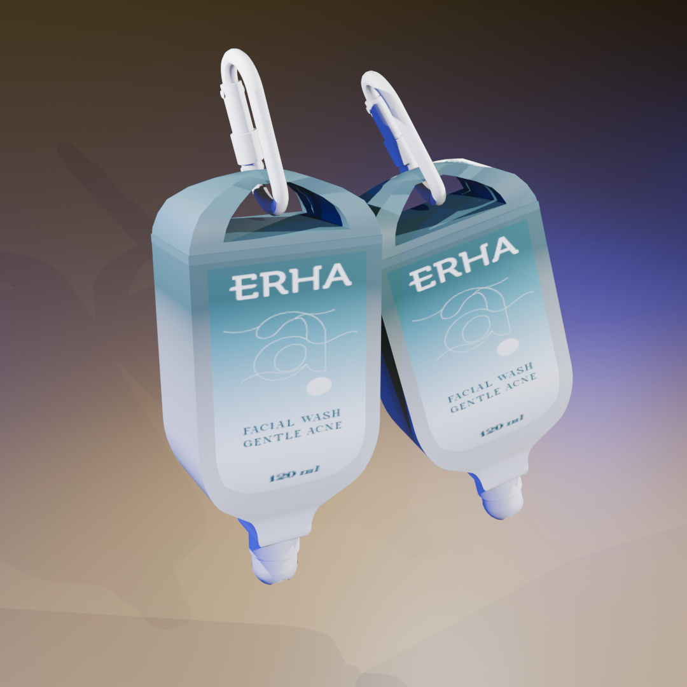

Description
Product Development using Kansei Engineering
Saya memiliki pengalaman dalam pengembangan desain kemasan produk kosmetik, khususnya pada produk facial wash dari brand ERHA, dengan menggunakan pendekatan Kansei Engineering untuk menerjemahkan persepsi emosional dan preferensi konsumen ke dalam elemen desain kemasan. Dalam proses tersebut, saya melakukan pengumpulan dan identifikasi Kansei words melalui kuesioner kepada responden untuk mengetahui kesan emosional konsumen terhadap desain kemasan, seperti kesan modern, praktis, menarik, dan informatif. Metode Kansei Engineering digunakan karena mampu menghubungkan perasaan atau persepsi konsumen dengan karakteristik desain produk sehingga desain yang dihasilkan lebih sesuai dengan kebutuhan pasar. Data hasil kuesioner kemudian dianalisis menggunakan Principal Component Analysis (PCA) untuk mengidentifikasi dan mereduksi variabel persepsi konsumen menjadi beberapa konsep desain utama yang mewakili preferensi konsumen. PCA membantu menentukan dimensi konsep kemasan yang paling berpengaruh terhadap persepsi pengguna dengan cara mengelompokkan kata-kata Kansei menjadi komponen utama yang memiliki kontribusi terbesar dalam membentuk konsep desain kemasan. Selanjutnya, saya menggunakan metode Quantification Theory Type 1 (QTT1) untuk menganalisis hubungan antara konsep desain yang dihasilkan dari PCA dengan berbagai elemen desain kemasan seperti bentuk kemasan, material, layout grafis, warna, dan fitur kemasan. Metode QTT1 memungkinkan konversi variabel kategori desain menjadi data kuantitatif sehingga dapat diketahui elemen desain mana yang paling berpengaruh terhadap preferensi konsumen. Berdasarkan hasil analisis tersebut, saya kemudian mengembangkan konsep desain kemasan facial wash yang tidak hanya mempertimbangkan aspek estetika dan identitas produk, tetapi juga fungsi kemasan, kemudahan penggunaan, serta daya tarik visual bagi konsumen. Hasil pengembangan ini digunakan sebagai dasar dalam merancang alternatif desain kemasan yang lebih sesuai dengan preferensi konsumen dan berpotensi meningkatkan nilai produk di pasar.


